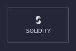

LearnEth plugin for Remix¶
About this plugin¶
This plugin is used in the Remix IDE. Remix is a powerful, open source tool that helps you write Solidity contracts straight from the browser. Read more about Remix here.
By default the plugin provides step by step tutorials on how to: use the features of the Remix IDE, code in the Solidity language and many other topics related to it.
The plugin also allows the user to experiment with code. The plugin is able to evaluate the user’s input and display answers and solutions to the assigments.
The plugin also allows anyone to create new tutorials to present to their audience.
The default tutorials¶
By default the plugin loads its tutorials from a Remix workshops repository. It’s a set created by the Remix team to get you started on a wide range of topics.
For tutorial creators¶
To create a new set of tutorials you will need to set up a new repository on github. You and your audience will then be able to import those tutorials into the plugin. Follow these instructions to structure your repository correctly.
For Remix users¶
Read about the plugin interface and how to use it here.
Requirements¶
Some tutorials need a set of Solidity plugins to be loaded into the IDE, otherwise testing your code is not possible. On the home screen of the Remix IDE you will find a button to activate that set:
Installation¶
Go to the plugin manager using the button in the sidebar
Find the LearnEth plugin the list and click ‘activate’

Configuration¶
That’s it, no configuration is needed. On the sidebar you will find the LearnEth icon. Click that to start the plugin.